Normal Wright workspace and actual isolated engineering run. No mocked routes or physical action.
Status: pass
Entered the normal authenticated workspace.
Expected: The workspace loads and offers Workflows.
Actual: Normal workspace and Workflows control visible.
raw 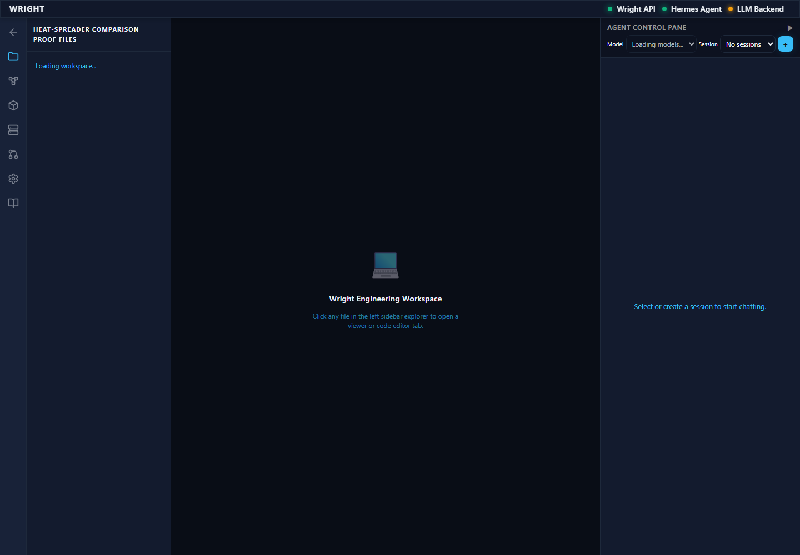
annotated 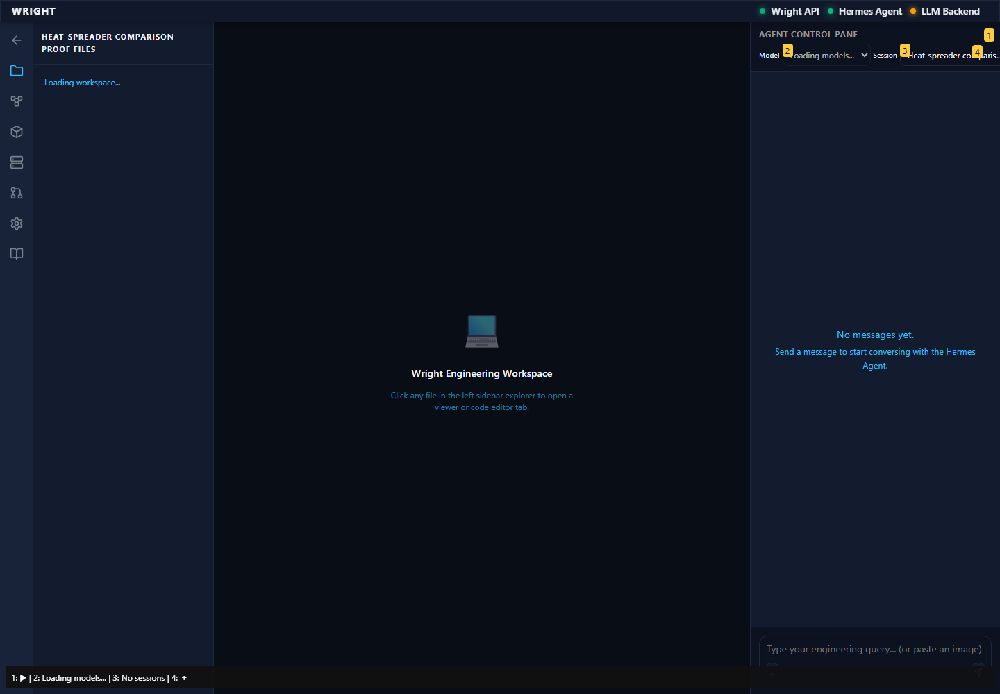
The established workflow editor is available inside the workspace.
Expected: Editor and working-view action appear.
Actual: Editor and working-view action visible.
raw 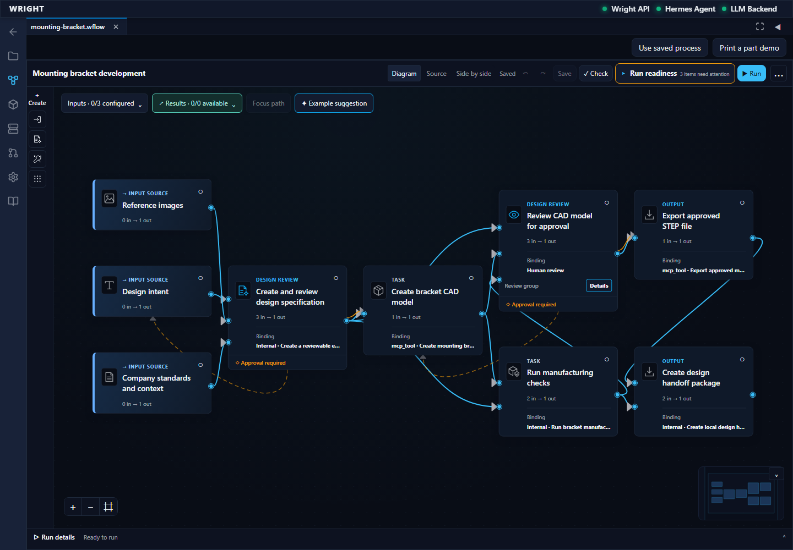
annotated 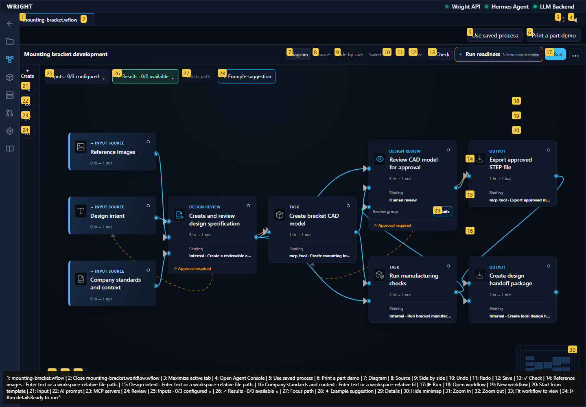
The workspace offers named saved workflows.
Expected: Open workflow is offered.
Actual: Existing file actions are visible.
raw 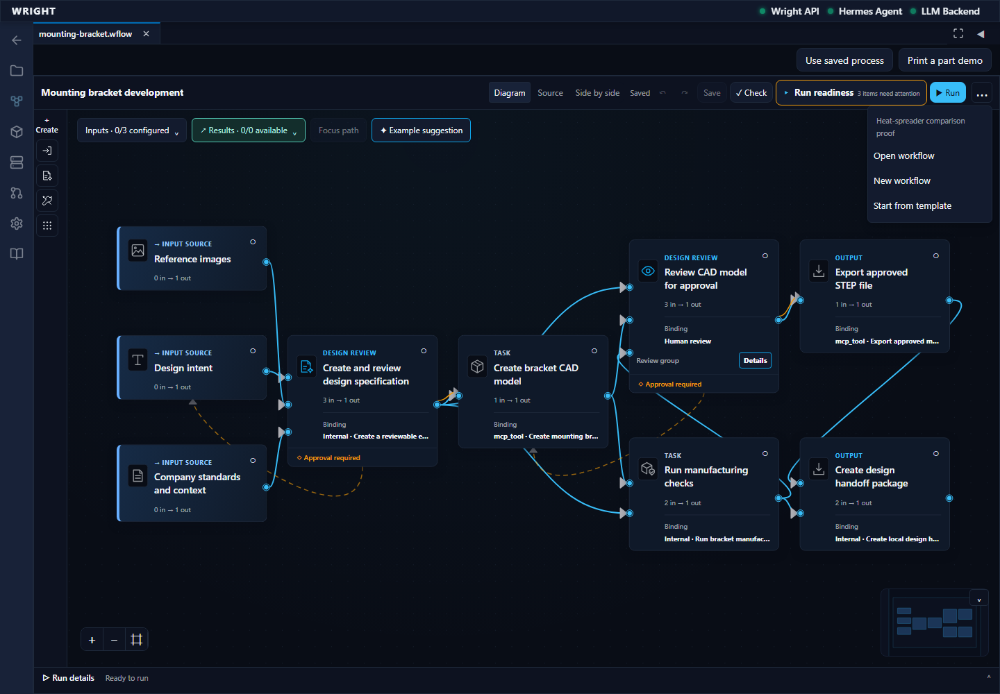
annotated 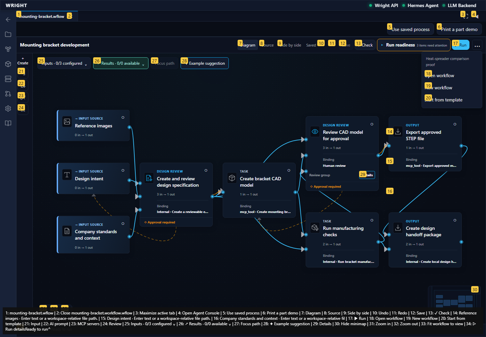
The exact accepted heat workflow appears in the saved files.
Expected: The accepted heat workflow is listed.
Actual: Exact accepted workflow choice visible.
raw 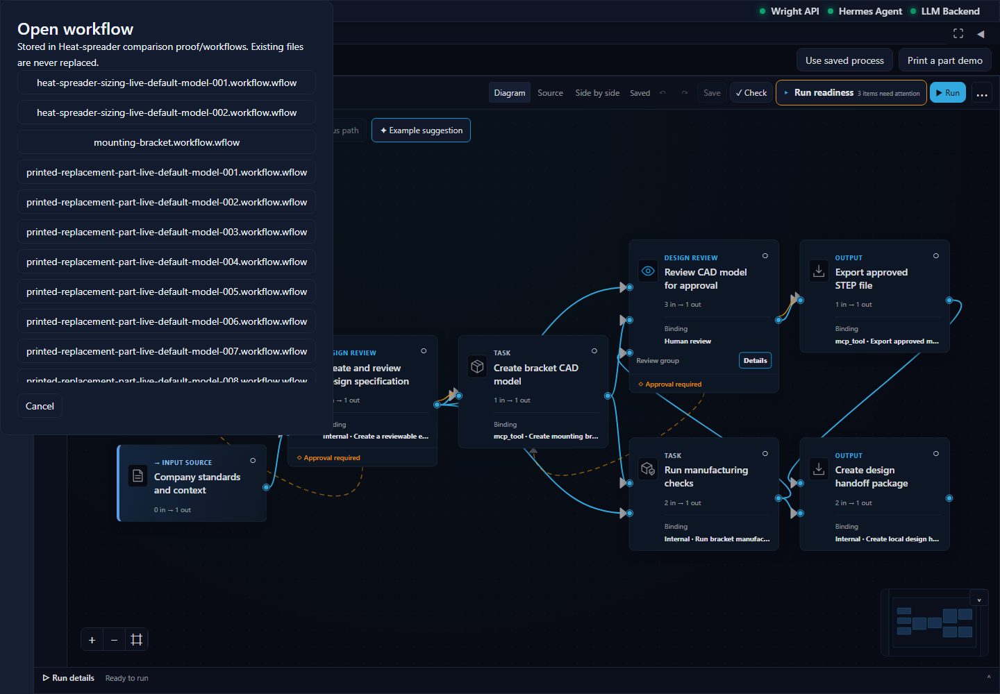
annotated 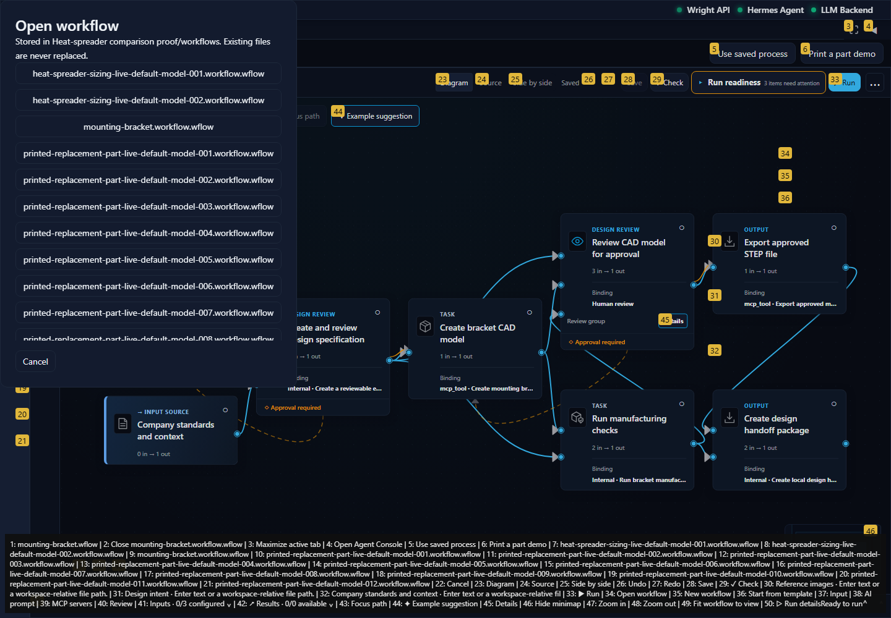
The original heat assignment opens with its connected review, CAD and analysis stages.
Expected: Accepted heat diagram and working view action available.
Actual: Exact saved heat source is open.
raw 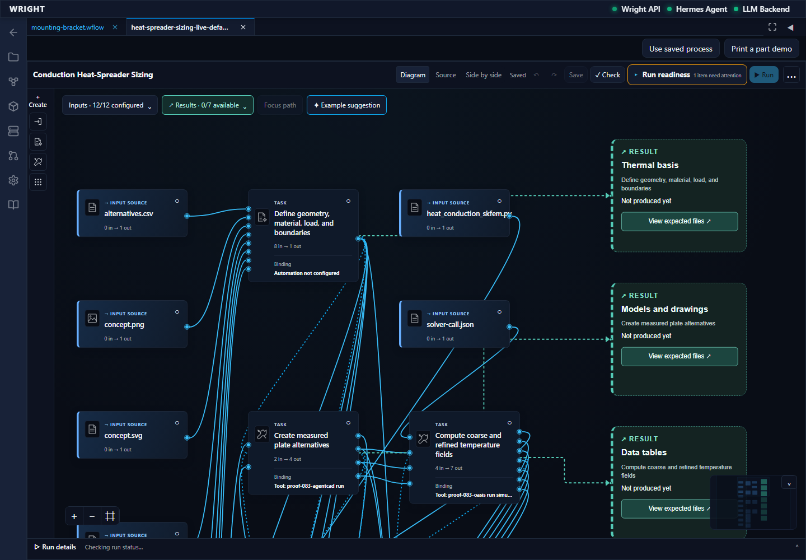
annotated 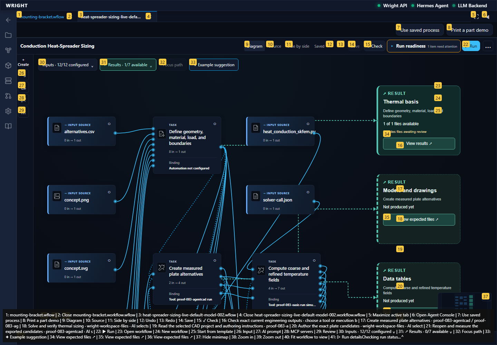
The process working interface opens in another Wright workspace tab.
Expected: Common working view in a workspace tab.
Actual: Common working view visible.
annotated 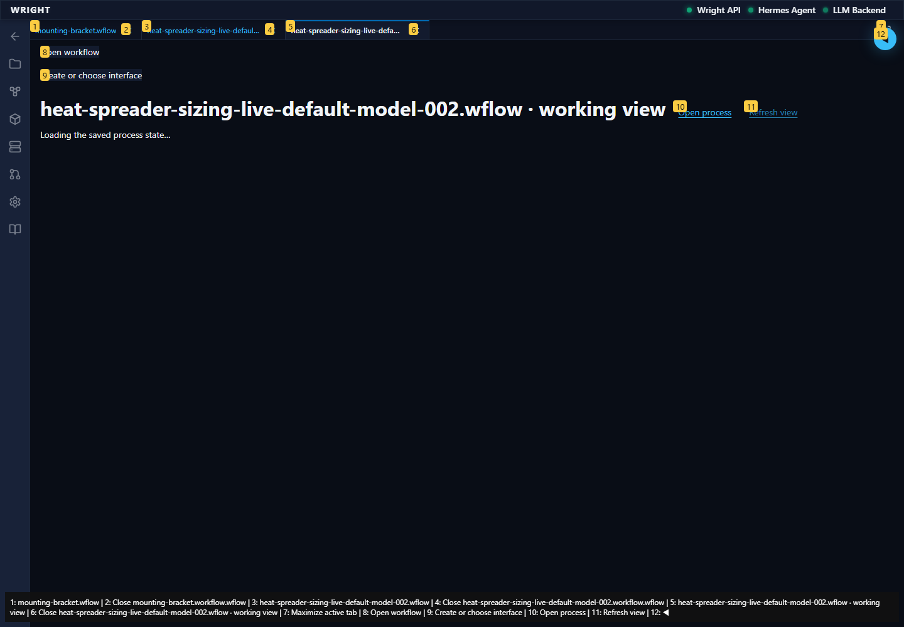
The working view reads the same isolated backend run.
Expected: The common working view attaches without starting another run.
Actual: Existing heat run attached.
The new private heat run has produced its thermal basis and stopped at the accepted source’s declared review.
Expected: Actual waiting review with the second run’s exact subject.
Actual: Second run is waiting for the declared thermal-basis review.
annotated 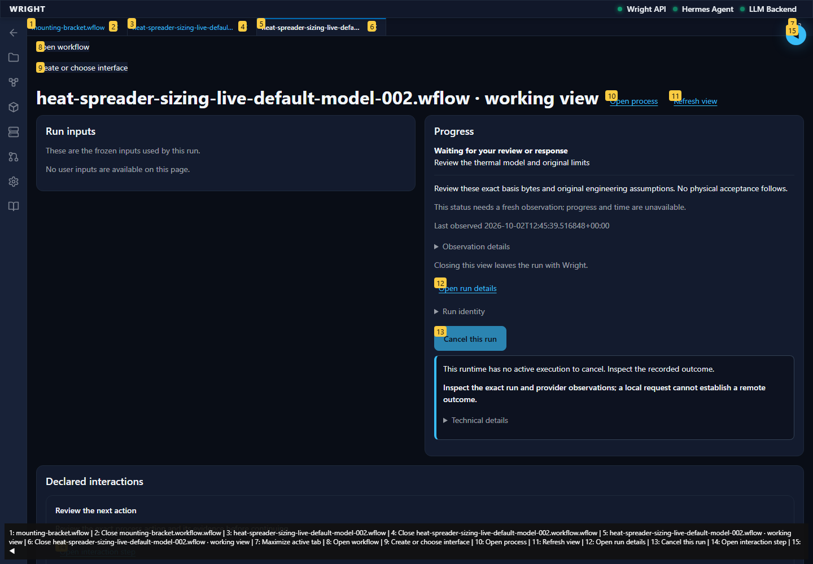
The generated interface uses shared Wright preparation controls without starting work.
Expected: Start disabled before explicit preparation, enabled only after backend readiness for those inputs.
Actual: Prepared inputs and backend-permitted Start visible; no start requested.
annotated 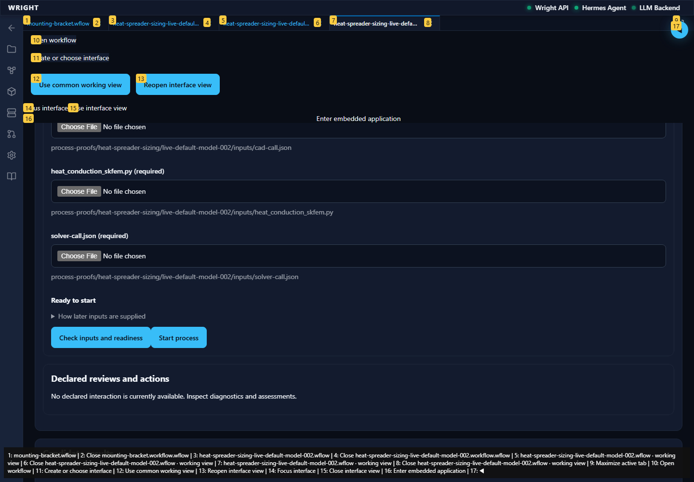
The saved compiled comparison displays only the new run’s basis result and exact waiting review.
Expected: Same UI revision, second run’s waiting state and one current result.
Actual: Same saved revision connected; second run result and declared waiting review shown.
annotated 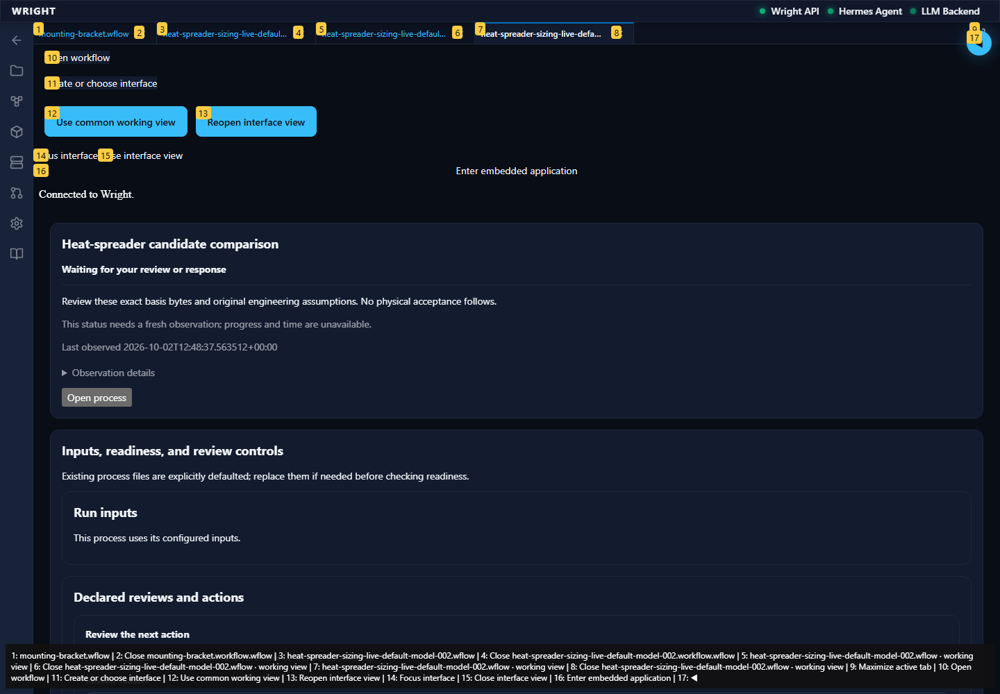
Reloading the workspace restores the same saved comparison and the same unconsumed review.
Expected: No start, regeneration or review response from reload.
Actual: Same second-run waiting subject and single result restored.